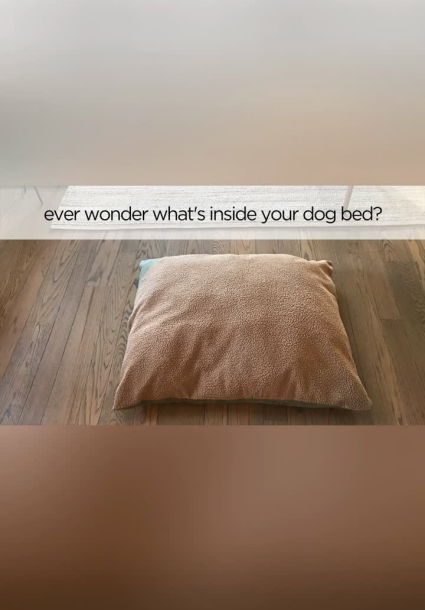
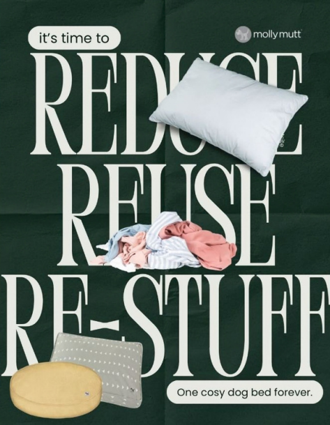
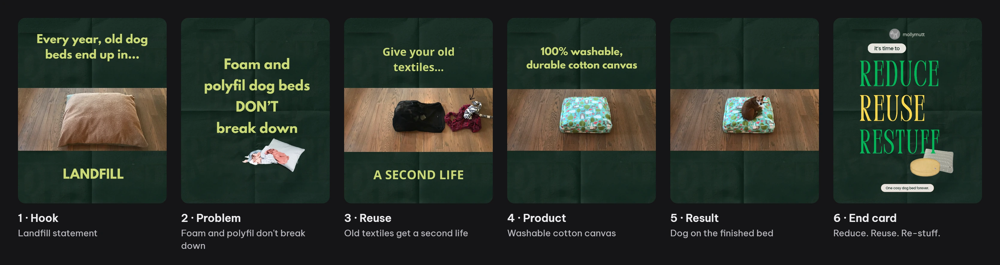
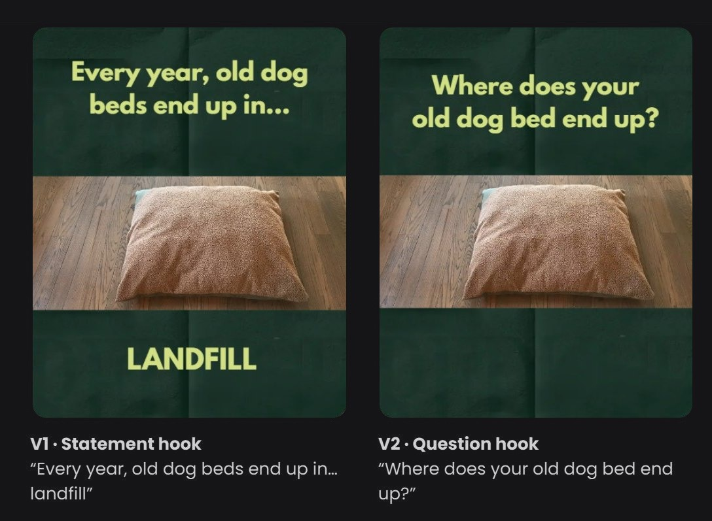
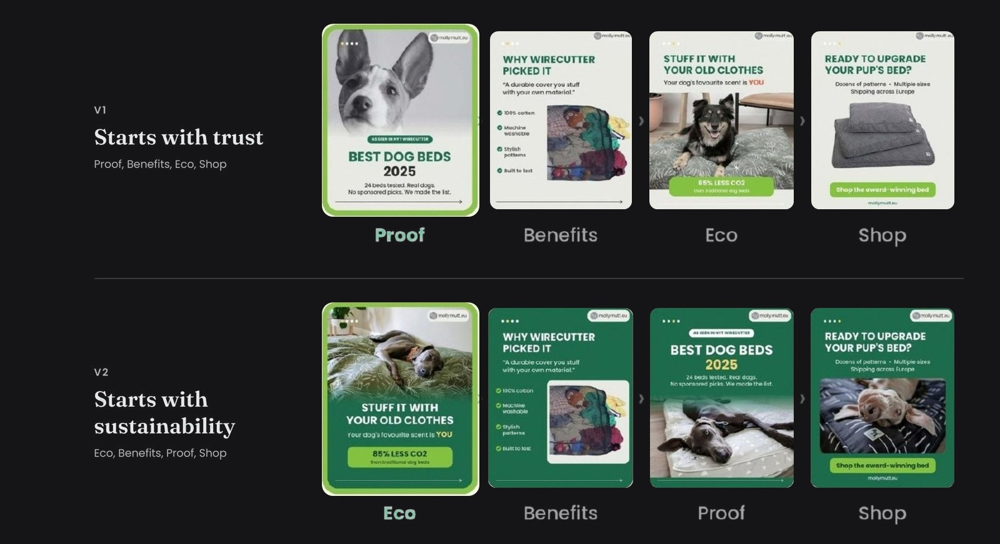

(W.I.P) Meta Ads Strategy
A €300 Meta Ads test plan for eco-minded dog owners in Germany: one Traffic campaign, two A/B tests and four ads built from the brand's own footage and photos.
About the campaign
The brief
Explain the unusual product idea “Stuff it yourself” and prove the green claims, on €300, with no Meta Pixel in place and no budget for new production.
Campaign idea
“Give your old pillows and clothes a second life with Molly Mutt”
Two pillars
Upcycling makes people curious. Material safety makes them trust the claim.
Pillar 1 · Upcycling
The hook
Old textiles become the filling. Nothing new goes into the bed.
Pillar 2 · Material safety
The proof
GOTS and Oeko-Tex certificates back the green claims.
= A green claim people can see and verify. The video ads show the upcycling; the carousel ads bring the proof.
At a glance
Target audience
Who they are
- All genders, 25–55 years old
- Live in Germany, own a dog
- Recycle, buy organic, avoid fast fashion
- Shop online
What drives them
- Products that match their values, for their pet too
- Real certifications over marketing claims
- The upcycling idea
What frustrates them
- “Eco-friendly” claims with no proof
- Guessing whether a claim is real
- Sustainable pet products that look cheap
Why Germany? It's the brand's largest priority market, it suits a brand built on certifications, and a Zooplus Germany listing gives paid social a retail page to support.
Goal and KPIs
The goal is to bring eco-minded dog owners in Germany from Meta to mollymutt.eu, where the website can explain the upcycling idea and show the certificates in full.
That makes Traffic the campaign objective. Cost per click (CPC) is the main KPI; click-through rate (CTR) shows whether people respond to the ads.
My contribution
Campaign Structure
One campaign and one audience, split into two A/B tests that run at the same time. The video test compares two opening captions; the carousel test compares two first slides. Everything else stays the same, so any difference in results comes from that one change.
Interests, buying behaviours, active mobile users
Video · V1
Statement hook
Give your old pillows & clothes a second life
Video · V2
Question hook
Give your old pillows & clothes a second life
Carousel · V1
Social proof hook
Trust & social proof
Carousel · V2
Eco hook
Trust & social proof
My contribution
Audience setup: from 20 million to 63.8k–75k people
How I built the target audience, step by step in Meta Ads Manager.
Green tags are the targeting options as they appear in Meta; grey tags show the audience size Meta estimated.
- LocationGermany
- Age and gender25 – 55All genders
- Purchase behaviourEngaged Shoppers
- InterestsDog groomingDog loversDog parkDog trainingDog walkingDog toy
- Check the size~20 million peopleToo wide. The course rule of thumb is 50,000–400,000 for a €30–40 daily budget; a wider audience spreads the budget over people who won't click.
- Narrow itUses a mobile device (10–12 months)63,800–75,000 peopleWhy mobile users? Facebook and Instagram are used mostly on phones, and Stories and Reels are phone formats. This filter keeps the ads with people who see them in the format they were made for.
Note: This is an Advantage+ audience, so Meta treats these settings as suggestions and may reach beyond them if that improves results.
My contribution · Video Test
Which opening line stops the scroll?
I turned Molly Mutt's own video into an ad and made two versions that differ only in the first caption. Both run to the same audience and placements, so any difference in clicks comes from the hook.
Step 1
Choose the format
Hypothesis: A video earns more engagement and a higher CTR than a static post, because motion shows old clothes turning into a bed: “reduce, reuse, re-stuff” in action.


Step 2
Edit the video
I edited the original clip into a recycling ad, without AI footage:
- Resized from 16:9 to 4:5 for the feed
- Cut from 31 to 26 seconds
- Added new frames and captions for the landfill and carbon angle

Step 3
Write two hooks
Hypothesis: Opening with a question gets more clicks than a statement, because a question leaves a gap the viewer wants to close.

Carousel Test
Which first slide earns the swipe?
The Wirecutter carousel adds outside proof. Both versions make the same claims; only the first slide changes. If the audience already cares about sustainability, the eco slide should win.

Strategic Decisions
Why we made these choices
Objective
- Traffic
- The idea needs a website to explain it, and without a Meta Pixel, clicks are the only result Meta can measure.
Audience
- Germany, ages 25–55
- Germany is the brand's largest priority market, and the age range matches the persona.
- Advantage+, narrowed to mobile users
- The mobile filter cut 20 million people to 63,800–75,000, inside the 50,000–400,000 rule of thumb, and suits phone formats like Stories and Reels.
- One audience for all four ads
- With the audience fixed, the ad is the only difference between two results.
Creative and testing
- Video and carousel
- Video shows the upcycling idea in motion; the carousel carries the proof: an award, certificates and a carbon figure.
- One change per test
- Changing one thing shows what caused a result: the first caption for video, the first slide for the carousel.
- Molly Mutt's own assets
- One person runs the business, so adapting existing footage and photos costs time, not production budget.
AI use. No AI-generated assets; the ads use Molly Mutt's own footage and photos, edited with Canva.